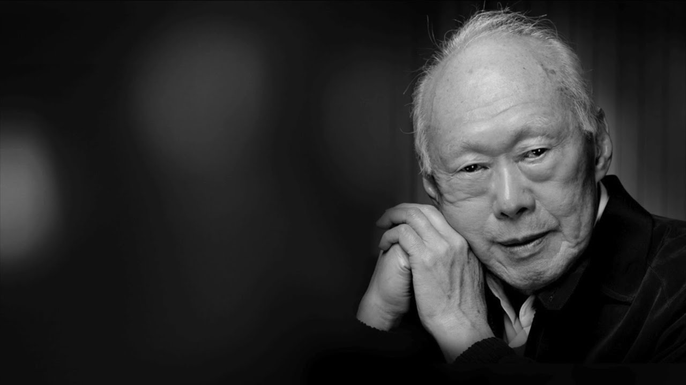

Mr Lee Kuan Yew
The man who built Singapore

Picture of late Mr Lee Kuan Yew
Lee Kuan Yew's Story
- September 16, 1923: Born into wealthy Chinese family in Singapore
- 1936-1942: Education at prestigious Raffles Institution and Raffles College
- February 15, 1942: Japanese occupation begins in Singapore
- February 18-22, 1942: Japanese troops massacre between 50,000 and 100,000 Chinese Singaporeans. Lee observes the occupying army's brutality up close.
- 1943-1944: Lee works as English-language editor for Japanese propaganda department called the Hobudu
- 1946: Student at London School of Economics
- 1947-1949: Law student at Cambridge University
- December 23, 1947: Secretly marries Kwa Geok Choo, who was also studying law at Cambridge
- 1950: Lee passes bar exams in Britain, returns to Singapore and starts practicing law, with trade unions among his clients
- November 1954: Co-founds the People's Action Party (PAP)
- April 1955: Elected to Legislative Assembly for the first time as an opposition MP
- 1959: PAP wins 43 out of 51 seats in legislative assembly; Singapore is granted limited self-rule by colonial ruler Britain; Lee is sworn in as prime minister at age 35
- September 16, 1963: Malaysia and Singapore merge under the Malaysian Federation
- August 9, 1965: Singapore is evicted from the Malaysian Federation after political storms and race riots highlighted the fragility of the union, and becomes an independent republic. Lee cries on national television when announcing the split
- August 8, 1967: Association of Southeast Asian Nations (ASEAN) is established with Singapore among the founding states
- 1968-1972: Lee convinces trade unions to adopt non-confrontational stance towards employers to avoid labor strikes, enacts policies to attract international financial institutions, and embarks on a vigorous family planning campaign urging couples to stop at two children; the campaign also promoted sterilisation
- 1971: Last British military forces withdraw
- 1975: Lee approves construction of Changi Airport as air traffic in the city-state surges; it evolves into one of the world's major aviation hubs
- November 28, 1990: Lee steps down as prime minister, hands over power to his deputy Goh Chok Tong
- 1990-2004 :Plays an advisory position in the cabinet as "senior minister"
- August 2004: His eldest son Lee Hsien Loong becomes prime minister; elder Lee continues to advise the cabinet as "minister mentor"
- October 2, 2010: Lee's wife Kwa Geok Choo dies following long illness
- May 2011: General elections are held; ruling PAP retains power but suffers its worst ever share in the popular vote. Lee subsequently steps down from his cabinet advisory role but remains an elected MP
- February 2013: Undergoes treatment after suffering from a prolonged irregular heartbeat due to a stroke-like condition
- February 5, 2015: Lee is hospitalized for severe pneumonia, goes into intensive care on life support
- March 23, 2015: Lee dies at age 91
Mr Lee Kuan Yew's Wikipedia